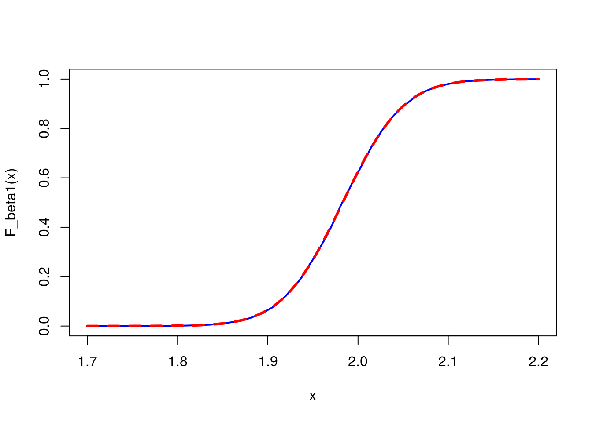
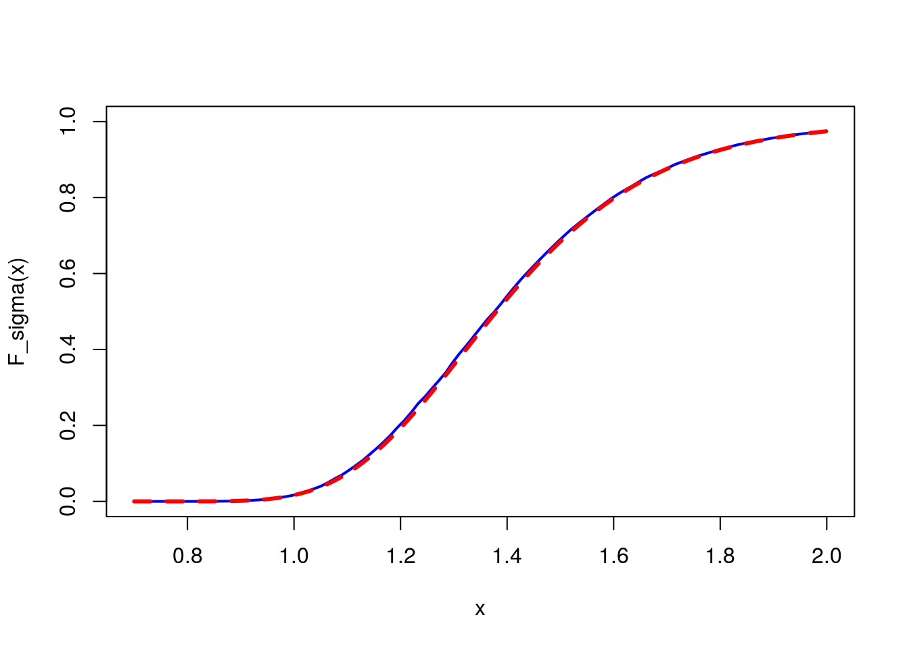

-
Fiducial statistics: the non-intrusive algorithm
2015-09-04
Source(this article is under progrees)
The 2012 paper Computational issues of generalized fiducial inference by Hannig & al. provides a nice way to simulate the generalized fiducial distribution of parametric models for independent observations with continuous sampling distributions. It is called the non-intrusive algorithm.
We start by showing how it works for a Gaussian sample \(x_i \sim_{\text{i.i.d.}} {\cal N}(\mu, \sigma^2)\) with unknown mean \(\mu\) and unknown standard deviation \(\sigma\).
The method is based on the representation \(X_i = G_{\mu,\sigma}(U_i)\) where the \(U_i\) are independent random variables uniformly distributed on \((0,1)\) and \(G_{\mu,\sigma}(U_i)\) is the inverse cdf of the Gaussian distribution \({\cal N}(\mu, \sigma^2)\). This representation is not specific to Gaussian distributions, it is a well-known fact used to sample from a dsitribution from a uniform sampling on \((0,1)\) when the inverse \(cdf\) is tractable. Since \({\cal N}(\mu, \sigma^2)\) is a continuous distribution, one can write the inverse relation \(U_i=F_{\mu,\sigma}(X_i)\) where \(F_{\mu,\sigma}\) is the cdf of \({\cal N}(\mu, \sigma^2)\).
Main step : solving the structural equations
The main step in the non-intrusive algorithm consists in solving for \((\mu,\sigma)\) the system of equations \[ \begin{cases} F_{\mu,\sigma}(x_{i}) = u_{i} \\ F_{\mu,\sigma}(x_{j}) = u_{j} \end{cases} \] for each indexes \(i<j\) of the observed sample \((x_1, \ldots, x_n)\) and given \(u_i, u_j \in (0,1)\). This is quite easy for the Gaussian case. Using the fact that \(F_{\mu,\sigma}(x)=\Phi\left(\frac{x-\mu}{\sigma}\right)\), where \(\Phi=F_{0,1}\), one gets a linear system of equations whose solution is \[ \begin{pmatrix} \mu \\ \sigma \end{pmatrix} = \frac{1}{\Phi^{-1}(u_j) - \Phi^{-1}(u_i)} \begin{pmatrix} x_i \Phi^{-1}(u_j) - x_j \Phi^{-1}(u_i) \\ x_j - x_i \end{pmatrix}. \] The value of \(\sigma\) is negative when \(u_i\) and \(u_j\) are not in the same order than \(x_i\) and \(x_j\), and these solutions are discarded. Thus, as long as \(x_i \neq x_j\), the system has a solution for all \((u_i, u_j)\) in a subset of \({(0,1)}^2\) having Lebesgue measure \(1/2\). We denote by \(Q_{x_i,x_j}(u_i, u_j)\) the solution.
Q <- function(x, u){ x1 <- x[1]; x2 <- x[2] u1 <- u[1]; u2 <- u[2] if(sign(x1-x2) != sign(u1-u2)) return(NULL) q <- qnorm(u) mu <- q[2]*x1-q[1]*x2 sigma <- x2-x1 return(c(mu,sigma)/(q[2]-q[1])) }Note that this step would be as simple for another location-scale family of distributions with location parameter \(\mu\) and scale parameter \(\sigma\). It suffices to replace \(\Phi^{-1}\) with the inverse cdf for \(\mu=0\) and \(\sigma=1\).
Screening \({(0,1)}^2\)
The algorithm requires a grid of \({(0,1)}^2\). For efficiency, we use the
data.tablepackage to generate and store this grid. TheCJ(Cross Join) function of thedata.tableis similar to theexpand.gridbase function but it returns the Cartesian product in a table of classdata.table.library(data.table) Grid <- function(L){ x <- seq(0, 1, length.out=L+1)[-1] - 1/(2*L) return(CJ(u1=x, u2=x)) }Grid(L)generatesL\(\times\)Lpoints uniformly allocated on the square:plot(Grid(6), pch="+", asp=1, xlim=c(0,1), xaxs="i", yaxs="i")Non-intrusive algorithm
For all pairs of indexes \(i < j\), or only for such pairs obtained by sampling (see below), the algorithm requires to evaluate the solution \(Q_{x_i,x_j}({\boldsymbol u})\) for \({\boldsymbol u}=(u_1,u_2)\) running over all the points of the grid.
The number of such pair of indexes \(i < j\) is \({n \choose 2}\). When it is not big, one runs the algorithm over all such pairs, otherwise one can run it over \(K<{n \choose 2}\) sampled pairs of indexes.
We denote by \((\mu_{k,m}, \sigma_{k,m})\) the solution \(Q_{x_i,x_j}({\boldsymbol u}_m)\) where \(i<j\) is the \(k\)-th pair of indexes \(i < j\) and \({\boldsymbol u}_m\) is the \(m\)-th point of the grid, for \(k = 1, \ldots, K\) (total number of pairs or number of sampled pairs) and \(m=1, \ldots, M\) (number of points in the grid), and set \(J_{k,m}=\frac{1}{M}f(x_i, \mu_k, \sigma_k)f(x_j, \mu_k, \sigma_k)\). The cases when \(Q_{x_i,x_j}({\boldsymbol u}_m)\) is not defined are simply not taken into account, equivalently one sets \(J_{k,m}=0\) in these cases. Then, the generalized fiducial probability of \((\mu,\sigma) \in A\) is approximated by \[ \frac{\sum_{k=1}^K\sum_{m=1}^M J_{k,m} {\boldsymbol 1}\{(\mu_{k,m}, \sigma_{k,m})\in A\}}{\sum_{k=1}^K\sum_{m=1}^M J_{k,m}} = \sum_{k=1}^K\sum_{m=1}^M W_{k,m} {\boldsymbol 1}\{(\mu_{k,m}, \sigma_{k,m})\in A\} \] with \(W_{k,m} = \frac{J_{k,m}}{\sum_{k=1}^K\sum_{m=1}^M J_{k,m}}\).
In particular, this formula provides the approximated generalized fiducial cdf of \(\mu\): \[ t \mapsto \sum_{k=1}^K\sum_{m=1}^M W_{k,m} {\boldsymbol 1}\{\mu_{k,m} \leq t\} \] and, similarly, the one of \(\sigma\): \[ t \mapsto \sum_{k=1}^K\sum_{m=1}^M W_{k,m} {\boldsymbol 1}\{\sigma_{k,m} \leq t\}. \] We will give more details about the way to perform fiducial inference after running an example.
Example
We run an example with the small sample size \(n=4\). There are only \({4 \choose 2} = 6\) pairs of indexes \(i<j\). We take a grid with \(100\times 100\) points.
# simulated data set.seed(666) n <- 4 x <- rnorm(n, mean=0.4, sd=0.8) # algorithm L <- 100 grid <- Grid(L) pairs <- combn(n, 2) # all combinations i<j K <- ncol(pairs) J <- Mu <- Sigma <- matrix(NA, nrow=L^2, ncol=K) for(k in 1:K){ I <- pairs[,k] Jk <- rep(NA, L^2) for(l in 1:L^2){ theta <- Q(x=x[I], u=c(grid$u1[l], grid$u2[l])) if(!is.null(theta)){ Jk[l] <- -2*log(L) + sum(dnorm(x[-I], theta[1], theta[2], log=TRUE)) Mu[l,k] <- theta[1] Sigma[l,k] <- theta[2] } } J[,k] <- exp(Jk) }At the end, we store the outputs in vectors, discarding the indexes \((k,m)\) for which there is no solution to the system of structural equations:
keep <- which(!is.na(J)) length(keep) # should be ??? 6*10000/2=30000 ## [1] 29700 W <- J[keep]/sum(J[keep]) Mu <- Mu[keep] Sigma <- Sigma[keep]Fiducial inference
The approximated generalized fiducial cdf of one parameter is exactly obtained as a weighted empirical cdf, taking the \(W_{k,m}\) as weights. Below we get it with the help of the
ewcdffunction of thespatstatpackage. The exact joint fiducial distribution is known, it is the same as the Jeffreys posterior distribution. Below we compare the approximate fiducial distribution of \(\mu\) with its exact fiducial distribution, which is a shifted and scaled Student distribution### approximate fiducial distribution of ?? ### F_mu <- spatstat::ewcdf(Mu, weights=W) curve(F_mu, from=0, to=2.5, col="blue", lwd=2) ### exact fiducial distribution ### mean_x <- mean(x) sd_x <- sd(x) curve(pt((x-mean_x)/(sd_x/sqrt(n)), df=n-1), add=TRUE, col="red", lwd=3, lty="dashed") ### show the median ### abline(h=0.5, lty="dotted") abline(v=mean(x), lty="dotted")The approximation is quite perfect. Below we do the same comparison for the fiducial distribution of \(\sigma\), and we also see a quite perfect approximation.
### approximate fiducial distribution of ?? ### F_sigma <- spatstat::ewcdf(Sigma,W) curve(F_sigma, from=0, to=2.5, ylim=c(0,1), col="blue", lwd=2) ### exact fiducial distribution ### # pdf of an inverse square root Gamma distribution psqrtigamma <- function(x, a, b) { 1-pgamma(1/x^2, a, b) } # fiducial/Jeffreys distribution psigma <- function(x, n, sd) { psqrtigamma(x, (n - 1)/2, (n - 1) * sd^2/2) } curve(psigma(x, n, sd_x), add=TRUE, col="red", lwd=3, lty="dashed")The quantiles of the marginal fiducial distributions are easy to get too. The
quantilefunction can be applied to empirical weighted cdf given byewcdffunction. Thus we get a \(95\%\)-confidence fiducial interval about \(\mu\) as follows:quantile(F_mu, c(0.025, 0.975))## 2.5% 97.5% ## -0.1707912 2.7454581confint(lm(x~1)) # theoretically it is the same## 2.5 % 97.5 % ## (Intercept) -0.1697282 2.746008The mean:
sum(W*Mu)## [1] 1.287964mean(x) # theoretically it is the same## [1] 1.28814sum(W*1/Sigma)## [1] 1.0042351/sd(x) # theoretically it is the same## [1] 1.091473To perform inference on a scalar quantity \(\psi = f(\mu, \sigma)\), say for example the coefficient of variation \(\psi=\sigma/\mu\), one simply construct the value of \(\psi\) for each pair \((\mu_{k,m}, \sigma_{k,m})\), and we proceed as before.
F_psi <- spatstat::ewcdf(Sigma/Mu, weights=W) curve(F_psi, from=0, to=3, col="blue", lwd=2)If needed, simulations of the fiducial distributions can be generated by multinomial sampling of the \((\mu_{k,m}, \sigma_{k,m})\):
msample <- rmultinom(1, length(keep), W)[,1] Sims <- cbind(mu=rep(Mu, times=msample), sigma=rep(Sigma, times=msample)) plot(Sims, pch="+")Improving the grid
To achieve better precision, one can use a grid specific to each pair of indexes \(i < j\), with points more concentrated around \(Q_{x_i,x_j}^{-1}(\hat\mu,\hat\sigma)\), where \(\hat\mu\) and \(\hat\sigma\) are the ML estimates. I have written the R functions below to generate such a grid, but so far I have not seriously studied the advantage of using it.
Subd <- function(rho1, rho2, p, n){ if(rho1>rho2) stop() rho1 <- tan(rho1*pi/180) rho2 <- tan(rho2*pi/180) a <- (rho2-rho1)/2 b <- rho1 g <- function(a, b, y) (-b+sign(b)*sqrt(b^2+4*a*y))/a/2 n1 <- max(floor(n*p), floor(n/2)) s1 <- sapply(seq(0, p*(a+b), length.out=n1+1), function(y) p*g(a*p, b*p, y)) s2 <- sapply(seq((p-1)*(a+b), 0, length.out=n-n1+1), function(y) (p-1)*g(a*(p-1), b*(p-1), y)+1) return(c(s1,s2[-1])) } ## hypercubes <- function(S, U, rho1=44, rho2=46){ subds <- lapply(U, function(u) Subd(rho1, rho2, u, S)) lengths <- as.matrix(do.call(CJ, c(setNames(lapply(subds, diff), paste0("l", 1:length(U))), list(sorted=FALSE)))) subds_exp <- as.matrix(do.call(CJ, setNames(lapply(subds, function(s) head(s,-1)), paste0("s", 1:length(U))))) centers <- setNames(data.table(lengths/2+subds_exp), paste0("u", 1:length(U))) return(cbind( logvolume=rowSums(log(as.matrix(lengths))), centers)) } grid <- hypercubes(20, U=c(0.3, 0.8), rho1=45, rho2=80) plot(0, 0, type="n", xlim=c(0,1), ylim=c(0,1), xlab=NA, ylab=NA) points(grid$u1, grid$u2, pch="+", col="blue")Generalization to linear regression
The above method is easily generalized to linear regression models \[Y=X\beta + \sigma \epsilon.\]. One can use a standard normal distribution for the error terms \(\epsilon_i\), or a Student distribution, a Cauchy distribution, or any distribution centered around \(0\) whose pdf and inverse cdf can be evaluated.
Our function
Qbecomes:Q <- function(Y, X, U, qdistr=qnorm){ H <- unname(cbind(X, qdistr(U))) if(det(H)==0) return(NULL) sol <- solve(crossprod(H))%*%t(H)%*%Y if(tail(sol,1)<=0) return(NULL) return(as.vector(sol)) }We also need a
Gridfunction for the \(p\)-dimensional hypercube \({(0,1)}^p\):Grid <- function(L, p){ x <- seq(0, 1, length.out=L+1)[-1] - 1/(2*L) return(do.call(CJ, rep(list(x), p))) }For example, we simulate data from a simple linear regression model:
f <- function(x) 4+2*x # simulated data set.seed(666) n <- 20 x <- seq_len(n) # covariates Y <- f(x)+rnorm(n) # model matrix X <- model.matrix(~x) p <- ncol(X)+1Then the non-intrusive algorithm is generated as follows:
L <- 40 grid <- as.matrix(Grid(L,p)) K <- 50 # number of sampled pairs i_1 < ... < i_p J <- Sigma <- matrix(NA, nrow=L^p, ncol=K) Theta <- array(NA, c(L^p, K, p)) for(k in 1:K){ I <- sort(sample(n, p)) Jk <- rep(NA, L^p) for(l in 1:L^p){ theta <- Q(Y=Y[I], X=X[I,], U=grid[l,], qnorm) if(!is.null(theta)){ Jk[l] <- sum(dnorm(Y[-I], X[-I,]%*%head(theta,-1), tail(theta,1), log=TRUE)) Theta[l,k,] <- theta } } J[,k] <- exp(Jk) } keep <- which(!is.na(J)) W <- J[keep]/sum(J[keep]) Beta0 <- Theta[,,1][keep]; Beta1 <- Theta[,,2][keep]; Sigma <- Theta[,,p][keep]However, we have not run the previous code here. It is too slow. This a good opportunity to use the
Rcpppackage to write and call aC++function.C++ implementation
I use the
RcppArmadillopackage which allows to use the ArmadilloC++library for linear algebra. As I am still a beginner inC++as well as in the use ofRcpp, for the moment I use theinlinepackage to integrate this function in R.library(inline) library(RcppArmadillo) src <- ' using namespace Rcpp; NumericMatrix XX(Xr); int n = XX.nrow(); int q = XX.ncol(); arma::mat X(XX.begin(), n, q, false); NumericVector YY(Yr); arma::colvec Y=YY; NumericMatrix GGrid(Gridr); int M = GGrid.nrow(), p = GGrid.ncol(); arma::mat Grid(GGrid.begin(), M, p, false); NumericMatrix II(Ir); int K = II.ncol(); arma::mat I(II.begin(), n, K, false); arma::colvec Ik(n); arma::mat XI(p,q); arma::mat XmI(n-p,q); arma::colvec YI(p); arma::colvec YmI(n-p); //arma::mat Theta(p, 0); arma::mat Theta(p, K*(M-pow(M, 1.0/p))/2); std::vector<double> J; NumericVector s(n-p); arma::colvec theta(p); arma::rowvec U(p); bool test; arma::rowvec G(p); arma::mat H(p,p); arma::colvec means(n-p); int counter=0; for(int k=0; k<K; k++){ Ik = I.col(k); XI=X.rows(find(Ik==1)); XmI=X.rows(find(Ik==0)); YI=Y(find(Ik==1)); YmI=Y(find(Ik==0)); for(int i=0; i<M; i++){ U = Grid(arma::span(i), arma::span::all); test = arma::all(vectorise(U) == U(0,0)); if(!test){ G = Rcpp::qnorm(as<NumericVector>(wrap(U))); H = join_rows(XI, trans(G)); theta = (trans(H)*H).i()*trans(H)*YI; if(theta(p-1,0)>0){ //Theta = join_rows(Theta, theta); Theta(arma::span::all, arma::span(counter)) = theta; counter += 1; means = XmI*(theta.head_rows(p-1)); for(int j=0; j<YmI.size(); j++){ s[j] = R::dnorm(YmI(j,0), means(j,0), theta(p-1,0), 1); } J.push_back(exp(arma::sum(as<arma::vec>(s)))); } } } } arma::rowvec sigma = Theta.row(p-1); Theta.shed_row(p-1); arma::vec W = arma::normalise(arma::conv_to<arma::vec>::from(J),1); return(List::create(Named("ncol")=Theta.size(), Named("ncol2")=K*(M-pow(M, 1/p))/2, Named("Theta")=Theta, Named("sigma") = sigma, Named("W") = W)); ' Fiducial <- cxxfunction(signature(Xr="numeric", Yr="numeric", Ir="integer", Gridr="numeric"), body=src, plugin="RcppArmadillo")Note the logical test
arma::all(vectorise(U) == U(0,0))in the code. It tests whether the coordinates of a point \({\boldsymbol u}\) of the grid are all equal. In such a case, the matrixHwould not be of full rank, because the columnGwould be a multiple of the intercept column of ones.Also note the two commented lines
\\ Theta .... I used this code first, but thejoint_rowsis very time-consuming.Let???s try our first example to compare the results.
set.seed(666) n <- 4 Yr <- rnorm(n, mean=0.4, sd=0.8) Xr <- matrix(1, nrow=n, ncol=1) # model matrix Gridr <- as.matrix(Grid(100, p=2)) pairs <- combn(n,2) Ir <- apply(pairs, 2, function(col) is.element(1:n, col)) # to do in C++ results <- Fiducial(Xr, Yr, Ir, Gridr)Nice, results are exactly the same:
W <- as.vector(results$W) Mu <- as.vector(results$Theta) Sigma <- as.vector(results$sigma) F_mu <- spatstat::ewcdf(Mu, weights=W) quantile(F_mu, c(0.025, 0.975)) ## 2.5% 97.5% ## -0.1707912 2.7454581 F_sigma <- spatstat::ewcdf(Sigma, weights=W) sum(W*1/Sigma) ## [1] 1.004235 1/sd(Yr) ## [1] 1.091473Simple linear regression example
Now we can run the simple linear regression example.
f <- function(x) 4+2*x # simulated data set.seed(666) n <- 20 x <- seq_len(n) # covariates Y <- f(x)+rnorm(n) # model matrix X <- model.matrix(~x) p <- ncol(X)+1There are \({20 \choose 3}=1140\) triples of indexes \(i_1<i_2<i_3\). We sample only \(50\) such triples, and we take a grid with \(30^3=27000\) hypercubes:
triples <- combn(n,p) K <- 50 triples <- triples[,sample.int(ncol(triples),K)] Ir <- apply(triples, 2, function(col) is.element(1:n, col)) # to do in C++ L <- 30 results <- Fiducial(Xr=X, Yr=Y, Ir=Ir, Gridr=as.matrix(Grid(L,p)))In spite of our choices of rather small \(K\) and \(L\), the approximated fiducial distribution is quite close to the theoretical one:
W <- as.vector(results$W) Beta0 <- as.vector(results$Theta[1,]) Beta1 <- as.vector(results$Theta[2,]) Sigma <- as.vector(results$sigma) sum(W*Beta0); sum(W*Beta1) ## [1] 4.176133 ## [1] 1.983161 (fit <- lm(Y~x)) ## ## Call: ## lm(formula = Y ~ x) ## ## Coefficients: ## (Intercept) x ## 4.180 1.983 F_beta0 <- spatstat::ewcdf(Beta0, weights=W) quantile(F_beta0, c(0.025, 0.975)) ## 2.5% 97.5% ## 2.844934 5.494454 confint(fit) ## 2.5 % 97.5 % ## (Intercept) 2.857903 5.501815 ## x 1.872653 2.093362 curve(F_beta0, from=2, to=6, ylim=c(0,1), col="blue", lwd=2) sfit <- summary(fit) stderror <- sfit$sigma*sqrt(diag(sfit$cov.unscaled)) curve(pt((x-coef(fit)[1])/stderror[1], df=n-2), add=TRUE, col="red", lwd=3, lty="dashed")
# beta1 F_beta1 <- spatstat::ewcdf(Beta1, weights=W) quantile(F_beta1, c(0.025, 0.975)) ## 2.5% 97.5% ## 1.872934 2.094042 curve(F_beta1, from=1.7, to=2.2, ylim=c(0,1), col="blue", lwd=2) curve(pt((x-coef(fit)[2])/stderror[2], df=n-2), add=TRUE, col="red", lwd=3, lty="dashed")
# sigma F_sigma <- spatstat::ewcdf(Sigma, weights=W) sum(W*1/Sigma) ## [1] 0.7307585 1/sfit$sigma ## [1] 0.7382578 curve(F_sigma, from=0.7, to=2, ylim=c(0,1), col="blue", lwd=2) curve(psqrtigamma(x, (n-2)/2, (n-2)*sfit$sigma^2/2), add=TRUE, col="red", lwd=3, lty="dashed")
- Home
- About
- PoirotReproducible Blogging with R Markdown
- SlidifyReproducible html5 slides from R markdown
- R-bloggersBlog posts about R, contributed by R bloggers worldwide.
- stla.overblogMy previous blog
- Timely Portfolio A great blog about R, Javascript, and more